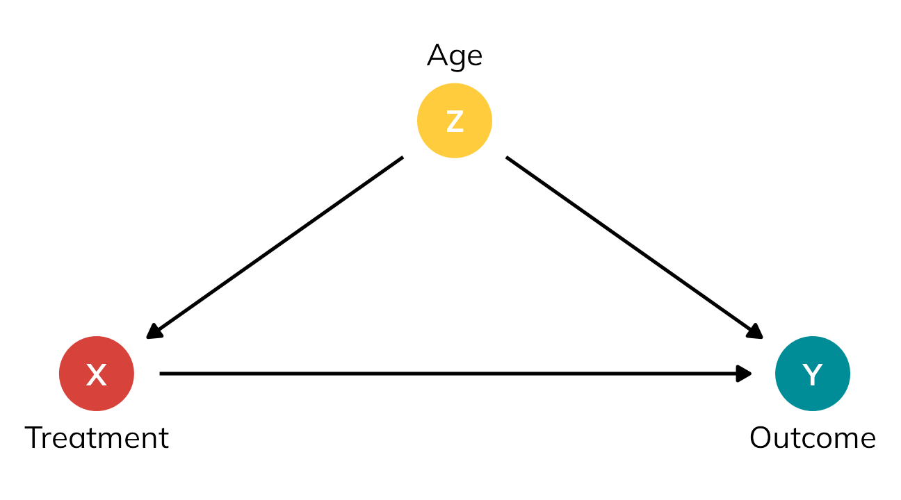
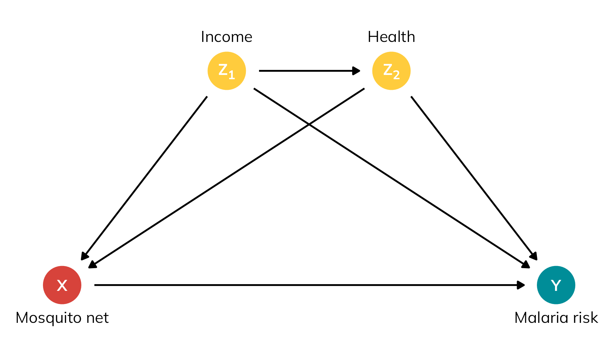
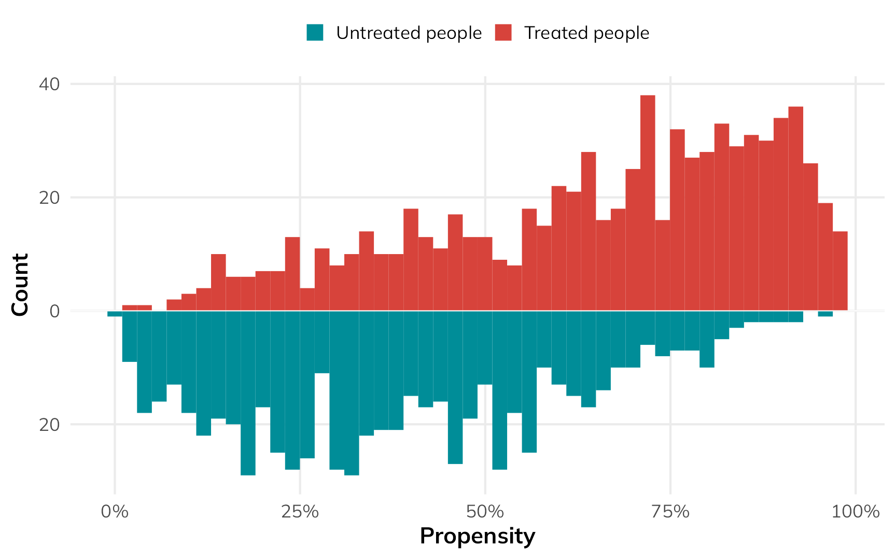
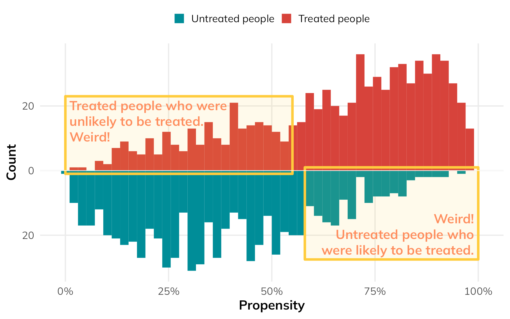
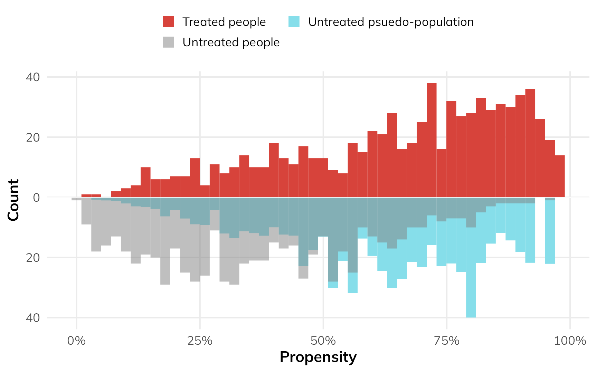
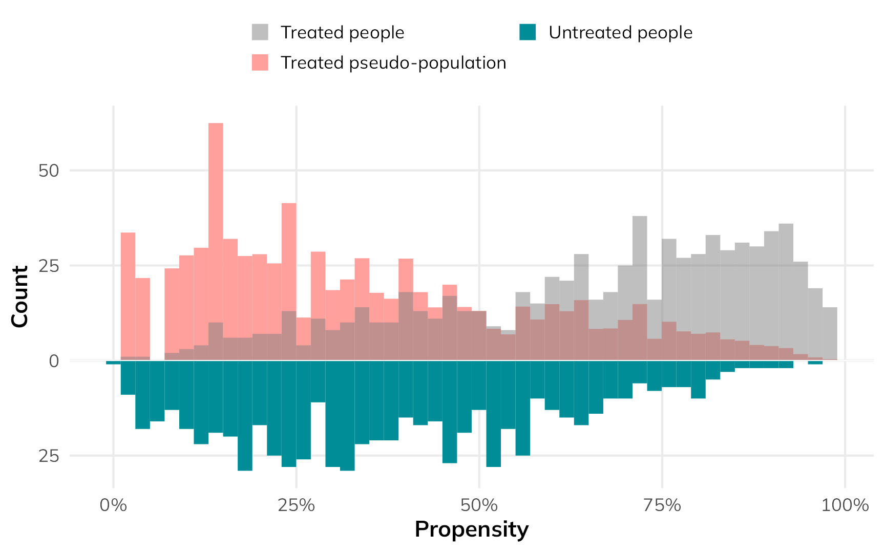

![]()
library(tidyverse)
library(ggtext)
library(ggdag)
library(dagitty)
library(gt)
library(broom)
library(marginaleffects)
library(WeightIt)
# Define a nice color palette from {MoMAColors}
# https://github.com/BlakeRMills/MoMAColors
clrs <- MoMAColors::moma.colors("ustwo")
# Download Mulish from https://fonts.google.com/specimen/Mulish
theme_nice <- function() {
theme_minimal(base_family = "Mulish") +
theme(
panel.grid.minor = element_blank(),
plot.background = element_rect(fill = "white", color = NA),
plot.title = element_text(face = "bold"),
axis.title = element_text(face = "bold"),
strip.text = element_text(face = "bold"),
strip.background = element_rect(fill = "grey80", color = NA),
legend.title = element_text(face = "bold")
)
}
theme_set(theme_nice())
update_geom_defaults("text", list(family = "Mulish", fontface = "plain"))
update_geom_defaults("label", list(family = "Mulish", fontface = "plain"))
update_geom_defaults(ggdag:::GeomDagText, list(family = "Mulish", fontface = "plain"))
update_geom_defaults(ggtext::GeomRichText, list(family = "Mulish", fontface = "plain"))In my causal inference class, I spend just one week talking about the Rubin causal model and potential outcomes. This view of causality argues that for any kind of intervention (passing a new policy, participation in a nonprofit program, taking a specific kind of medicine, etc.), people will have one of two possible outcomes:
- What would happen if they receive the intervention or treatment, and
- What would happen if they do not receive the treatment
These two outcomes are potential outcomes. Both are plausible, but only one will happen in real life. These potential outcomes lead to a bunch of different causal estimands we might be interested in, like the average treatment effect.
I give such short shrift to potential outcomes largely because the bulk of the class approaches the idea of causal inference through Judea Pearl-style DAGs instead of potential outcomes. It’s a strange arrangement that I’ve stumbled into: the potential outcomes approach is incredibly popular and widespread in social sciences (particularly in economics), while causal models and DAGs are more popular in fields like epidemiology. For unfathomable reasons, there’s a weird animosity between these two worlds. Judea Pearl regularly needles social scientists on Twitter for not using DAGs and clinging to potential outcomes, while Nobel-winning econometricians decry DAGs. It’s weird.1
1 Though this neat paper by a DAG-using economist tries to bridge that gap (Huntington-Klein 2022).
As a social scientist myself, you’d think I’d have embraced the potential outcomes approach, but for whatever reason, it never stuck and it was always confusing to me. When I came across Judea Pearl’s The Book of Why (Pearl and Mackenzie 2020) a few years ago, I fell in love with the world of DAGs. They made sense—far more sense than the weird decompositional algebra behind average treatment effects, average treatment on the treated effects, average treatment on the untreated effects, and so on.
I’m not the only social science convert to DAGs. The general social science methods textbook Counterfactuals and Causal Inference (Morgan and Winship 2014) started popularizing DAGs in 2007, two modern phenomenal econometrics textbooks—The Effect (Huntington-Klein 2021) and Causal Inference: The Mixtape (Cunningham 2021)—feature DAGs throughout (despite that discipline’s weird aversion to them), and the latest version of the fantastic Bayesian Statistical Rethinking (McElreath 2020) uses them extensively.
Despite all these newer DAG-based approaches in social science, in my class, I never really revisit the potential outcomes framework after that one week. We do all sorts of causal effects estimation with DAG-based adjustment through matching and inverse probability weighting, and quasi-experimental design-based approaches like difference-in-differences, regression discontinuity, and instrumental variables, but beyond emphasizing the fact that methods like regression discontinuity and instrumental variables only return local average treatment effects, we don’t really ever talk about ATEs and ATTs and ATUs again.
This has always bugged me.
Beyond introducing the idea that we can’t find individual-level causal effects without a time machine, thinking about potential outcomes is neat, I guess, but not exactly relevant to all the other methods we cover. I know that’s wrong! But that’s how my mental model of these estimands has worked. All these other methods give some sort of general average causal effect, but I’m never sure which exact flavor of causal effect it is (or if the exact flavor matters).
But a newer working paper by Greifer and Stuart (2023) has finally helped me realize why these different estimands matter and what the subtle differences between them are.
So in this post, I’ll extend the basic standard ATE/ATT/ATU example to reflect a more realistic, larger dataset, and I’ll use propensity score weighting to estimate each estimand. I’ll also follow Greifer and Stuart’s example and translate these estimands into policy-relevant English equivalents (they use medical terminology; I’m not that kind of doctor and I work with social science and policy interventions).
But first, I highly recommend reading through their paper really quick. It’s not too long and and it’s not too mathy—it’s succinct and accessible and a good primer for all these estimands.
(And before we start, let’s load some R packages.)
Quick crash course in potential outcomes
Before getting into the subtle differences between the various potential outcomes-related estimands, it’s helpful to get a general sense for how these things work. So let’s take a super abbreviated crash course in the potential outcomes framework.
Every causal inference textbook ever written will include a table like Table 1 to illustrate potential outcomes. To make this idea a little more mathy, we’ll call the treatment or intervention \(X\), the outcome that would happen if treated \(Y^1\), and the outcome that would happen if not treated \(Y^0\).2 We’ll use \(\delta\) for the difference between \(Y^1\) and \(Y^0\), or the individual-level causal effect.
2 The notation for all this varies wildly across disciplines. Economists call the treatment \(D\) for mysterious reasons; epidemiologists will often call it \(A\); I’ve seen political science papers call it \(T\) (which at least makes more sense than \(D\) or \(A\), since “treatment” starts with T). In my class I call it \(X\), which follows what a lot of other people do (like this guide to “10 Strategies for Figuring Out if X Caused Y”).
Code
basic_po <- tribble(
~id, ~age, ~treated, ~outcome_1, ~outcome_0,
1, "Old", 1, 80, 60,
2, "Old", 1, 75, 70,
3, "Old", 1, 85, 80,
4, "Old", 0, 70, 60,
5, "Young", 1, 75, 70,
6, "Young", 0, 80, 80,
7, "Young", 0, 90, 100,
8, "Young", 0, 85, 80
) |>
mutate(
ice = outcome_1 - outcome_0,
outcome = ifelse(treated == 1, outcome_1, outcome_0)
)
basic_po |>
select(
id, age, treated, outcome_1, outcome_0, ice, outcome
) |>
gt() |>
sub_missing(missing_text = "…") |>
fmt_number(
columns = c(starts_with("outcome"), ice),
decimals = 0
) |>
# Column labels
cols_label(
id = "ID",
age = md("$Z_i$"),
treated = md("$X_i$"),
outcome_0 = md("$Y^0_i$"),
outcome_1 = md("$Y^1_i$"),
outcome = md("$Y_i$"),
ice = md("$Y^1_i - Y^0_i$")
) |>
# Level 1 spanner labels
tab_spanner(
label = "Age", columns = age,
level = 1, id = "level1_a_po"
) |>
tab_spanner(
label = "Treated", columns = treated,
level = 1, id = "level1_b_po"
) |>
tab_spanner(
label = "Potential outcomes",
columns = c(outcome_1, outcome_0),
level = 1, id = "level1_c_po"
) |>
tab_spanner(
label = "ICE or \\(\\delta_i\\)", columns = ice,
level = 1, id = "level1_d_po"
) |>
tab_spanner(
label = "Outcome", columns = outcome,
level = 1, id = "level1_e_po"
) |>
# Level 2 spanner labels
tab_spanner(
label = "Confounder",
columns = age,
level = 2, id = "level2_a_po"
) |>
tab_spanner(
label = "Treatment", columns = treated,
level = 2, id = "level2_b_po"
) |>
tab_spanner(
label = "Unobservable",
columns = c(outcome_1, outcome_0, ice),
level = 2, id = "level2_c_po"
) |>
tab_spanner(
label = "Realized", columns = outcome,
level = 2, id = "level2_d_po") |>
# Style stuff
tab_style(
style = cell_text(align = "center"),
locations = cells_column_labels()
) |>
tab_style(
style = cell_text(align = "center"),
locations = cells_body()
) |>
tab_style(
style = cell_text(weight = "bold"),
locations = list(
cells_column_spanners(spanners = starts_with("level1")),
cells_column_labels(columns = "id")
)
) |>
tab_style(
style = cell_text(style = "italic"),
locations = cells_column_spanners(spanners = starts_with("level2"))
) |>
tab_style(
style = list(
cell_fill(color = clrs[4], alpha = 0.5)
),
locations = cells_body(rows = treated == 1)
) |>
tab_footnote(
footnote = "ICE = individual causal effect",
locations = cells_column_spanners(spanners = "level1_d_po")
) |>
opt_footnote_marks(marks = "standard") |>
opt_horizontal_padding(scale = 3) |>
opt_table_font(font = "Jost")| Confounder | Treatment | Unobservable | Realized | |||
|---|---|---|---|---|---|---|
| ID | Age | Treated | Potential outcomes | ICE or \(\delta_i\)* | Outcome | |
\(Z_i\) |
\(X_i\) |
\(Y^1_i\) |
\(Y^0_i\) |
\(Y^1_i - Y^0_i\) |
\(Y_i\) |
|
| 1 | Old | 1 | 80 | 60 | 20 | 80 |
| 2 | Old | 1 | 75 | 70 | 5 | 75 |
| 3 | Old | 1 | 85 | 80 | 5 | 85 |
| 4 | Old | 0 | 70 | 60 | 10 | 60 |
| 5 | Young | 1 | 75 | 70 | 5 | 75 |
| 6 | Young | 0 | 80 | 80 | 0 | 80 |
| 7 | Young | 0 | 90 | 100 | −10 | 100 |
| 8 | Young | 0 | 85 | 80 | 5 | 80 |
| * ICE = individual causal effect | ||||||
Individual-level causal effects (ICE or \(\delta\))
Each person in Table 1 has two potential outcomes. Person 1, for instance, would have an outcome of 80 (\(Y^1\)) if they receive the treatment \(X\), but only an outcome of 60 (\(Y^0\)) if they don’t. Their individual-level causal effect (\(\delta\)) is 20. This represents the effect of the treatment for just that one person, and it’s only measurable with a time machine or some way to observe parallel universes.
Average treatment effects (ATE)
If we could compare all these people in Universe A and Universe B and measure their individual causal effects, we could calculate the average treatment effect (ATE), or the effect of the intervention across the whole population. Officially, the ATE is the average of the \(\delta\) column, or the average of \(Y^1 - Y^0\):
\[ \begin{aligned} \text{ATE} &= E[\delta_i] & \text{ or} \\ \text{ATE} &= E[Y^1_i - Y^0_i] \end{aligned} \]
Given the data in Table 1, the ATE is 5—it’s the average of the \(\delta\) column:
\[ \text{ATE} = \frac{20 + 5 + 5 + 5 + 10 + 0 + -10 + 5}{8} = 5 \]
Neat.
Average treatment effect on the treated (ATT)
There are a couple other causal effects we can measure. We might want to know how big the effect is just for those who received the treatment. This is called the average treatment effect on the treated (ATT), and is the average of the individual causal effects just among those who were treated. Officially, it’s defined like this:
\[ \begin{aligned} \text{ATT} &= E[\delta_i \mid X_i = 1] & \text{or} \\ \text{ATT} &= E[Y^1_i - Y^0_i \mid X_i = 1] \end{aligned} \]
In this case, that means we’re only looking at the average \(\delta\) for rows 1, 2, 3, and 5 in Table 1:
\[ \text{ATT} = \frac{20 + 5 + 5 + 5}{4} = 8.75 \]
Average treatment effect on the untreated (ATU)
We can also calculate the average treatment effect on the untreated (ATU; sometimes called the ATC (for effect on the control group)) by finding the average of the individual causal effects among those who were not treated:
\[ \begin{aligned} \text{ATU} &= E[\delta_i \mid X_i = 0] & \text{or} \\ \text{ATU} &= E[Y^1_i - Y^0_i \mid X_i = 0] \end{aligned} \]
Here, we’re only looking at the average \(\delta\) for rows 4, 6, 7, and 8 in Table 1:
\[ \text{ATU} = \frac{10 + 0 - 10 + 5}{4} = 1.25 \]
Selection bias
There’s a neat relationship between the ATE, ATT, and ATU—the ATE is technically a weighted average of the ATT added to the weighted average of the ATU (here \(\pi\) means “proportion”, not 3.1415):
\[ \text{ATE} = (\pi_\text{Treated} \times \text{ATT}) + (\pi_\text{Untreated} \times \text{ATU}) \]
Applying this to Table 1, we can get the same ATE:
\[ \begin{aligned} \text{ATE} &= (\frac{4}{8} \times 8.75) + (\frac{4}{8} \times 1.25) \\ &= 4.375 + 0.625 \\ &= 5 \end{aligned} \]
One reason it’s helpful to decompose the ATE into these two parts like this is that it shows that there’s some systematic difference between the treated and untreated people. This difference is called selection bias. People who chose to be treated did so for reasons known only to them.3
3 Not only do we need a time machine for good causal inference, we also need a machine that can read minds.
We can see the selection bias in an alternative decomposition of the ATE:
\[ \text{ATE} = \text{ATT} + \text{Selection bias} \]
The fact that the ATT (8.75) is bigger than the ATE (5) here is a sign the two groups are different. This intervention, whatever it is, has a big effect on the treated people who signed up for it, likely because they somehow knew that the intervention would be helpful for them. Those who were untreated have a really low ATU (1.25)—they likely didn’t sign up for the intervention because they knew that it wouldn’t do much for them.
Finding the ATE from observational data
This is all well and good, but we don’t have time machines. This is the fundamental problem of causal inference—we have no idea what each person’s \(\delta\) is. We actually only see this in real life:
Code
basic_po |>
select(
id, age, treated, outcome
) |>
gt() |>
fmt_number(
columns = "outcome",
decimals = 0
) |>
# Column labels
cols_label(
id = "ID",
age = md("$Z_i$"),
treated = md("$X_i$"),
outcome = md("$Y_i$")
) |>
# Level 1 spanner labels
tab_spanner(
label = "Age", columns = age,
level = 1, id = "level1_a_po_obs"
) |>
tab_spanner(
label = "Treated", columns = treated,
level = 1, id = "level1_b_po_obs"
) |>
tab_spanner(
label = "Outcome", columns = outcome,
level = 1, id = "level1_c_po_obs"
) |>
# Level 2 spanner labels
tab_spanner(
label = "Confounder",
columns = age,
level = 2, id = "level2_a_po_obs"
) |>
tab_spanner(
label = "Treatment", columns = treated,
level = 2, id = "level2_b_po_obs"
) |>
tab_spanner(
label = "Realized", columns = outcome,
level = 2, id = "level2_c_po_obs") |>
# Style stuff
tab_style(
style = cell_text(align = "center"),
locations = cells_column_labels()
) |>
tab_style(
style = cell_text(align = "center"),
locations = cells_body()
) |>
tab_style(
style = cell_text(weight = "bold"),
locations = list(
cells_column_spanners(spanners = starts_with("level1")),
cells_column_labels(columns = "id")
)
) |>
tab_style(
style = cell_text(style = "italic"),
locations = cells_column_spanners(spanners = starts_with("level2"))
) |>
tab_style(
style = list(
cell_fill(color = clrs[4], alpha = 0.5)
),
locations = cells_body(rows = treated == 1)
) |>
opt_horizontal_padding(scale = 3) |>
opt_table_font(font = "Jost")| Confounder | Treatment | Realized | |
|---|---|---|---|
| ID | Age | Treated | Outcome |
\(Z_i\) |
\(X_i\) |
\(Y_i\) |
|
| 1 | Old | 1 | 80 |
| 2 | Old | 1 | 75 |
| 3 | Old | 1 | 85 |
| 4 | Old | 0 | 60 |
| 5 | Young | 1 | 75 |
| 6 | Young | 0 | 80 |
| 7 | Young | 0 | 100 |
| 8 | Young | 0 | 80 |
We could try to find the ATE by finding the average outcome among the treated (\(\bar{Y}_\text{Treated}\)) and subtracting it from the average outcome among the untreated (\(\bar{Y}_\text{Untreated}\)):
\[ \begin{aligned} \text{ATE}_\text{naive} &= \bar{Y}_\text{Treated} - \bar{Y}_\text{Untreated} \\ &= \frac{80 + 75 + 85 + 75}{4} - \frac{60 + 80 + 100 + 80}{4} \\ &= 78.75 - 80 \\ &= -1.25 \end{aligned} \]
But this is horribly wrong. Selection bias is distorting the causal effect here. Treated people sought out treatment because they knew it would be good for them. We can’t compare the two groups directly like this because of the systematic differences between them.
We need to somehow account for the fact that the two groups are different. We’ve been ignoring one column in this table all this time—age (\(Z\)). It looks like age is highly correlated with treatment status here. 75% of people who signed up for the treatment were old; 75% of people who didn’t sign up for the treatment were young.4 In DAG terms, age seems to be a confounder—it causes both the choice to receive treatment and the ultimate value of the outcome. Age opens up a backdoor relationship between treatment and outcome and messes up the causal effect. If we can somehow statistically account for age, we’ll be left with a more accurate estimate of the actual ATE.
4 Maybe this treatment is a colonoscopy? idk—use your imagination.
Code
basic_dag <- dagify(
Y ~ X + Z,
X ~ Z,
exposure = "X",
outcome = "Y",
coords = list(
x = c(X = 1, Y = 3, Z = 2),
y = c(X = 1, Y = 1, Z = 2)
)
)
basic_dag_plot <- basic_dag |>
tidy_dagitty() |>
mutate(var_type = case_when(
name == "X" ~ "Exposure",
name == "Y" ~ "Outcome",
str_detect(name, "Z") ~ "Confounder"
)) |>
mutate(var_label = case_match(name,
"X" ~ "Treatment",
"Y" ~ "Outcome",
"Z" ~ "Age"
))
ggplot(basic_dag_plot, aes(x = x, y = y, xend = xend, yend = yend)) +
geom_dag_edges() +
geom_dag_point(aes(color = var_type), size = 12) +
geom_richtext(
aes(label = name), fontface = "bold", color = "white",
fill = NA, label.color = NA,
label.padding = grid::unit(c(3, 0, 0, 0), "pt")
) +
geom_dag_text(
data = filter(basic_dag_plot, var_type != "Confounder"), aes(label = var_label),
nudge_y = -0.25, color = "black", size = 11, size.unit = "pt"
) +
geom_dag_text(
data = filter(basic_dag_plot, var_type == "Confounder"), aes(label = var_label),
nudge_y = 0.26, color = "black", size = 11, size.unit = "pt"
) +
scale_color_manual(values = clrs[c(4, 1, 6)], guide = "none") +
theme_dag()

There are lots of ways to adjust for age here (there are whole textbooks about this; matching, inverse probability weighting, etc.). One simple way is to stratify by age and find the sum of weighted averages for old and young people, like this:
\[ \text{ATE} = (\pi_\text{Old} \times \text{Effect}_\text{Old}) + (\pi_\text{Young} \times \text{Effect}_\text{Young}) \]
With the data from the table, we get:
\[ \begin{aligned} \text{Effect}_\text{Stratified} &= (\pi_\text{Treated} \times \bar{Y}_\text{Treated}) - (\pi_\text{Untreated} \times \bar{Y}_\text{Untreated}) \\[20pt] \text{Effect}_\text{Old} &= \frac{80 + 75 + 85}{3} - \frac{60}{1} &&= 20 \\ \text{Effect}_\text{Young} &= \frac{75}{1} - \frac{80 + 100 + 80}{3} &&= -11.667 \\[20pt] \text{ATE} &= (\frac{4}{8} \times 20) + (\frac{4}{8} \times -11.667) &&= 4.1667 \end{aligned} \]
4.1667 isn’t quite the true ATE of 5, but it’s surprisingly close! If we had more than 8 rows of data, we’d get even closer (as long as age was really truly the only confounder).
Moving beyond the ATE
Walking through a table like this is a useful exercise. It illustrates how individual causal effects are unobservable. It shows how we could theoretically find the average treatment effect of some intervention. It highlights the role selection bias and confounding play in distorting causal effects. It points to ways of accounting for confounding through statistical adjustment.
But for me personally, that’s about all the utility I’ve gotten out of tables like this. One aesthetic reason is that these numbers are all really generic—people get an outcome of 80 or 60 or whatever, but 80 or 60 what? It’s left up to the reader’s imagination.
More importantly, though, I’ve always figured that the ATT and ATU that you calculate from these kinds of tables were extra peripheral estimands that you found on your way to calculating the ATE, and that all you should really care about is the ATE.
But that’s wrong!
So to rectify this, let’s explore the nuances of different flavors of treatment effects using a more involved potential outcomes dataset that’s more realistic, based on a hypothetical international development intervention designed to reduce the risk of malaria through the use of anti-mosquito bed nets.5 The data is observational and non-experimental—people choose to use the nets or not based on personal preferences. In this case, income and health confound the net → malaria risk relationship: income influences health, and both income and health influence the choice to use a net and overall malaria risk.
5 I used a similar dataset back in this blog post, and I use similar data in my class too; this version is new and improved though, with more explicit confounding and differences between the ATE, ATT, and ATU built in.
Code
mosquito_dag <- dagitty('
dag {
"X" [exposure,pos="1,1"]
"Y" [outcome,pos="4,1"]
"Z<sub>1</sub>" [pos="2,2"]
"Z<sub>2</sub>" [pos="3,2"]
"Z<sub>2</sub>" -> "Y"
"Z<sub>2</sub>" -> "X"
"Z<sub>1</sub>" -> "Y"
"Z<sub>1</sub>" -> "Z<sub>2</sub>"
"Z<sub>1</sub>" -> "X"
"X" -> "Y"
}')
dag_plot <- mosquito_dag |>
tidy_dagitty() |>
mutate(var_type = case_when(
name == "X" ~ "Exposure",
name == "Y" ~ "Outcome",
str_detect(name, "Z") ~ "Confounder"
)) |>
mutate(var_label = case_match(name,
"X" ~ "Mosquito net",
"Y" ~ "Malaria risk",
"Z<sub>1</sub>" ~ "Income",
"Z<sub>2</sub>" ~ "Health"
))
ggplot(dag_plot, aes(x = x, y = y, xend = xend, yend = yend)) +
geom_dag_edges() +
geom_dag_point(aes(color = var_type), size = 12) +
geom_richtext(
aes(label = name), fontface = "bold", color = "white",
fill = NA, label.color = NA,
label.padding = grid::unit(c(3, 0, 0, 0), "pt")
) +
geom_dag_text(
data = filter(dag_plot, var_type != "Confounder"), aes(label = var_label),
nudge_y = -0.15, color = "black", size = 11, size.unit = "pt"
) +
geom_dag_text(
data = filter(dag_plot, var_type == "Confounder"), aes(label = var_label),
nudge_y = 0.16, color = "black", size = 11, size.unit = "pt"
) +
scale_color_manual(values = clrs[c(4, 1, 6)], guide = "none") +
theme_dag()

In this dataset, the true ATE is −15. Using a bed net causes a 15-unit decrease in malaria risk across the whole population on average.
In the interest of space, I’ve hidden the data generation code below. You can also download a CSV version of it here if you want to follow along but not run all the code:
Code for generating synthetic mosquito net data
withr::with_seed(1234, {
n <- 1500
nets <- tibble(
# Generate exogenous variables
id = 1:n,
income = rnorm(n, 500, 100)
) |>
# Generate health, which depends on income
mutate(
health = (0.1 * income) + rnorm(n, 0, 10),
health = pmin(pmax(health, 0), 100) # Force values to 0-100 range
) |>
# Generate net usage (treatment), which depends on health and income
mutate(
# Make people with high health and high income a lot more likely to
# self-select into treatment
income_high = income > quantile(income, 0.8),
health_high = health > quantile(health, 0.8),
# Create latent propensity scores based on logit formula
net_prob = plogis(
-3 + (income / 300) + (health / 40) +
(0.9 * income_high) + (0.5 * health_high)),
# Assign to treatment
net = rbinom(n, 1,
# Fancy little trick---increase the latent propensity score by 5
# percentage points for people already more likely (i.e. p > 50%) to
# receive treatment and decrease the propensity score by 8 percentage
# points for those already less likely to receive treatment
prob = ifelse(
net_prob > 0.5,
pmin(net_prob + 0.05, 0.98),
pmax(net_prob - 0.08, 0.02))
)
) |>
# Generate potential and actual outcomes
mutate(
# Individual outcomes in a world where individuals are not treated
malaria_risk_0 = 90 + (-0.2 * health) + (-0.05 * income) + rnorm(n, 0, 6),
malaria_risk_0 = pmin(pmax(malaria_risk_0, 0), 100), # Force values to 0-100
# Individual outcomes in a world where individuals are treated
# Basically risk_0 + a baseline treatment effect + extra treatment effect
# boosts because of income and health
malaria_risk_1 = malaria_risk_0 -
rnorm(n, 3, 1) - (0.015 * income) - (0.09 * health),
malaria_risk_1 = pmin(pmax(malaria_risk_1, 0), 100), # Force values to 0-100
# Round stuff
malaria_risk_0 = round(malaria_risk_0, 1),
malaria_risk_1 = round(malaria_risk_1, 1),
ice = malaria_risk_1 - malaria_risk_0,
# Actual realized outcome
malaria_risk = ifelse(net == 1, malaria_risk_1, malaria_risk_0)
) |>
# Round more stuff
mutate(across(c(income, health), ~round(., 0))) |>
# Only keep some columns
select(
id, income, income_high, health, health_high, net,
starts_with("malaria"), ice
)
})
write_csv(nets, "mosquito_nets_v2.csv")We have four main variables in this data:
- Net use (Treatment): Binary 0/1, TRUE/FALSE variable indicating if the person uses a bed net.
- Malaria risk (Outcome): Scale from 0–100, with higher values representing greater risk.
- Income (Confounder): Weekly income, measured in dollars. Higher income causes a higher probability of using a net; people above the 80th percentile get an extra boost in probability.
- Health (Confounder): Health status, scale from 0–100, with higher values representing better health. Better health causes a higher probability of using a net; people above the 80th percentile get an extra boost in probability.
Table 3 shows a small excerpt of the data, with people using nets highlighted in yellow to mimic standard example potential outcome tables like Table 1.
Code
excerpt <- nets |>
slice(c(3, 14, 15, 29, 4, 35, 37, 73)) |>
arrange(id)
excerpt |>
add_row(id = NA) |>
select(
id, income, health, net,
malaria_risk_1, malaria_risk_0, ice, malaria_risk
) |>
gt() |>
sub_missing(missing_text = "…") |>
fmt_number(
columns = c(starts_with("malaria_risk"), ice),
decimals = 1
) |>
fmt_number(columns = c(income, health), decimals = 0) |>
# Column labels
cols_label(
id = "ID",
income = md("$Z_{1_i}$"),
health = md("$Z_{2_i}$"),
net = md("$X_i$"),
malaria_risk_0 = md("$Y^0_i$"),
malaria_risk_1 = md("$Y^1_i$"),
malaria_risk = md("$Y_i$"),
ice = md("$Y^1_i - Y^0_i$")
) |>
# Level 1 spanner labels
tab_spanner(
label = "Income", columns = income,
level = 1, id = "level1_a"
) |>
tab_spanner(
label = "Health", columns = health,
level = 1, id = "level1_b"
) |>
tab_spanner(
label = "Net use", columns = net,
level = 1, id = "level1_c"
) |>
tab_spanner(
label = "Potential outcomes",
columns = c(malaria_risk_1, malaria_risk_0),
level = 1, id = "level1_d"
) |>
tab_spanner(
label = "ICE or \\(\\delta_i\\)", columns = ice,
level = 1, id = "level1_e"
) |>
tab_spanner(
label = "Outcome", columns = malaria_risk,
level = 1, id = "level1_f"
) |>
# Level 2 spanner labels
tab_spanner(
label = "Confounders",
columns = c(income, health),
level = 2, id = "level2_a"
) |>
tab_spanner(
label = "Treatment", columns = net,
level = 2, id = "level2_b"
) |>
tab_spanner(
label = "Unobservable",
columns = c(malaria_risk_1, malaria_risk_0, ice),
level = 2, id = "level2_c"
) |>
tab_spanner(
label = "Realized", columns = malaria_risk,
level = 2, id = "level2_d") |>
# Style stuff
tab_style(
style = cell_text(align = "center"),
locations = cells_column_labels()
) |>
tab_style(
style = cell_text(align = "center"),
locations = cells_body()
) |>
tab_style(
style = cell_text(weight = "bold"),
locations = list(
cells_column_spanners(spanners = starts_with("level1")),
cells_column_labels(columns = "id")
)
) |>
tab_style(
style = cell_text(style = "italic"),
locations = cells_column_spanners(spanners = starts_with("level2"))
) |>
tab_style(
style = list(
cell_fill(color = clrs[4], alpha = 0.5)
),
locations = cells_body(rows = net == 1)
) |>
tab_footnote(
footnote = "ICE = individual causal effect",
locations = cells_column_spanners(spanners = "level1_e")
) |>
opt_footnote_marks(marks = "standard") |>
opt_horizontal_padding(scale = 3) |>
opt_table_font(font = "Jost")| Confounders | Treatment | Unobservable | Realized | ||||
|---|---|---|---|---|---|---|---|
| ID | Income | Health | Net use | Potential outcomes | ICE or \(\delta_i\)* | Outcome | |
\(Z_{1_i}\) |
\(Z_{2_i}\) |
\(X_i\) |
\(Y^1_i\) |
\(Y^0_i\) |
\(Y^1_i - Y^0_i\) |
\(Y_i\) |
|
| 3 | 608 | 54 | 1 | 34.9 | 52.7 | −17.8 | 34.9 |
| 4 | 265 | 21 | 0 | 73.0 | 82.8 | −9.8 | 82.8 |
| 14 | 506 | 58 | 1 | 22.5 | 39.4 | −16.9 | 22.5 |
| 15 | 596 | 62 | 1 | 43.0 | 59.0 | −16.0 | 43.0 |
| 29 | 498 | 61 | 1 | 40.0 | 55.6 | −15.6 | 40.0 |
| 35 | 337 | 42 | 0 | 57.6 | 68.0 | −10.4 | 68.0 |
| 37 | 282 | 28 | 0 | 50.5 | 59.4 | −8.9 | 59.4 |
| 73 | 463 | 37 | 0 | 47.9 | 59.4 | −11.5 | 59.4 |
| … | … | … | … | … | … | … | … |
| * ICE = individual causal effect | |||||||
Let’s use this data to explore and calculate three different estimands from Greifer and Stuart (2023): the ATE, the ATT, and the ATU. For each estimand, we’ll do this:
- Give a plain translation of what the estimand measures and explanation about why we would care about it
- Calculate the estimand using the true-but-unobservable individual causal effects (ICE), or \(\delta\)
- Calculate the estimand using propensity score-based weighting and g-computation
Plain translations and true values
Here’s what the synthetic nets data looks like—we have columns for each of the columns in Table 3, as well as some indicators for whether income and health are above the 80th percentile:
nets |> glimpse()
## Rows: 1,500
## Columns: 10
## $ id <int> 1, 2, 3, 4, 5, 6, 7, 8, 9, 10, 11, 12, 13, 14, 15, 16, 17, 18, 19, 20, 21, 22, 23, 24, 25, 26, 27, 28, 29, 30, 31, 32, 33, 34, 35, 36, 37, 38, 39, 40, 41, 42, 43, 44, 45, 46, 47, 48, 49, 50, 51, 52, 53, 54, 55, 56, 57, 58, 59, 60, 61, 62, 63, 64, 65, 66, 67, 68, 69, 70, 71, …
## $ income <dbl> 379, 528, 608, 265, 543, 551, 443, 445, 444, 411, 452, 400, 422, 506, 596, 489, 449, 409, 416, 742, 513, 451, 456, 546, 431, 355, 557, 398, 498, 406, 610, 452, 429, 450, 337, 383, 282, 366, 471, 453, 645, 393, 414, 472, 401, 403, 389, 375, 448, 450, 319, 442, 389, 399, 484, …
## $ income_high <lgl> FALSE, FALSE, TRUE, FALSE, FALSE, FALSE, FALSE, FALSE, FALSE, FALSE, FALSE, FALSE, FALSE, FALSE, TRUE, FALSE, FALSE, FALSE, FALSE, TRUE, FALSE, FALSE, FALSE, FALSE, FALSE, FALSE, FALSE, FALSE, FALSE, FALSE, TRUE, FALSE, FALSE, FALSE, FALSE, FALSE, FALSE, FALSE, FALSE, FALSE,…
## $ health <dbl> 56, 39, 54, 21, 51, 51, 49, 32, 39, 36, 41, 34, 54, 58, 62, 35, 74, 50, 54, 55, 49, 53, 49, 61, 49, 31, 53, 31, 61, 21, 58, 53, 41, 59, 42, 30, 28, 37, 50, 40, 58, 37, 51, 58, 34, 41, 29, 30, 39, 32, 12, 52, 43, 32, 58, 74, 41, 54, 78, 40, 51, 64, 41, 37, 29, 61, 48, 56, 79,…
## $ health_high <lgl> FALSE, FALSE, FALSE, FALSE, FALSE, FALSE, FALSE, FALSE, FALSE, FALSE, FALSE, FALSE, FALSE, FALSE, FALSE, FALSE, TRUE, FALSE, FALSE, FALSE, FALSE, FALSE, FALSE, FALSE, FALSE, FALSE, FALSE, FALSE, FALSE, FALSE, FALSE, FALSE, FALSE, FALSE, FALSE, FALSE, FALSE, FALSE, FALSE, FAL…
## $ net <int> 0, 0, 1, 0, 0, 1, 1, 1, 1, 1, 0, 0, 0, 1, 1, 0, 1, 0, 1, 0, 0, 0, 1, 0, 1, 0, 0, 0, 1, 0, 0, 1, 0, 1, 0, 1, 0, 0, 1, 0, 0, 0, 1, 1, 0, 1, 1, 0, 0, 0, 0, 0, 0, 0, 0, 1, 1, 0, 1, 1, 0, 1, 1, 0, 0, 1, 0, 0, 1, 0, 0, 1, 0, 0, 1, 1, 0, 0, 0, 0, 0, 0, 0, 1, 1, 1, 1, 0, 0, 0, 1, 1,…
## $ malaria_risk_0 <dbl> 50.1, 59.4, 52.7, 82.8, 42.5, 54.0, 57.4, 68.8, 61.1, 54.9, 54.9, 66.6, 52.8, 39.4, 59.0, 60.7, 57.4, 54.9, 56.4, 29.2, 64.5, 61.4, 51.5, 52.0, 62.1, 60.1, 45.7, 67.7, 55.6, 70.3, 46.3, 53.9, 66.3, 58.5, 68.0, 51.7, 59.4, 61.6, 55.4, 64.7, 47.3, 59.0, 53.0, 68.9, 68.6, 64.5,…
## $ malaria_risk_1 <dbl> 35.1, 42.9, 34.9, 73.0, 25.7, 38.9, 43.5, 56.1, 48.0, 41.1, 40.2, 53.0, 37.4, 22.5, 43.0, 46.6, 42.8, 41.1, 41.9, 10.8, 47.9, 46.6, 37.6, 34.8, 47.8, 47.7, 28.6, 54.4, 40.0, 60.2, 27.4, 39.7, 52.8, 42.6, 57.6, 39.8, 50.5, 50.6, 38.3, 52.9, 30.3, 48.5, 38.1, 54.4, 56.7, 51.2,…
## $ malaria_risk <dbl> 50.1, 59.4, 34.9, 82.8, 42.5, 38.9, 43.5, 56.1, 48.0, 41.1, 54.9, 66.6, 52.8, 22.5, 43.0, 60.7, 42.8, 54.9, 41.9, 29.2, 64.5, 61.4, 37.6, 52.0, 47.8, 60.1, 45.7, 67.7, 40.0, 70.3, 46.3, 39.7, 66.3, 42.6, 68.0, 39.8, 59.4, 61.6, 38.3, 64.7, 47.3, 59.0, 38.1, 54.4, 68.6, 51.2,…
## $ ice <dbl> -15.0, -16.5, -17.8, -9.8, -16.8, -15.1, -13.9, -12.7, -13.1, -13.8, -14.7, -13.6, -15.4, -16.9, -16.0, -14.1, -14.6, -13.8, -14.5, -18.4, -16.6, -14.8, -13.9, -17.2, -14.3, -12.4, -17.1, -13.3, -15.6, -10.1, -18.9, -14.2, -13.5, -15.9, -10.4, -11.9, -8.9, -11.0, -17.1, -11.…ATE
The average treatment effect (ATE) is what I’ve always assumed people always want to find when doing causal inference. It represents the effect of using bed nets across the whole population, even if people wouldn’t ordinarily receive the treatment. It’s a really broad estimand, so it’s good for policies with a wide scope that might influence an entire population, like if a government is considering rolling out free or subsidized bed nets to everyone in the country.
We calculate this by taking the average of all individual causal effects:
\[ \begin{aligned} \text{ATE} &= E[\delta_i] & \text{ or} \\ \text{ATE} &= E[Y^1_i - Y^0_i] \end{aligned} \]
Conceptually this is the same as imagining two hypothetical worlds: in Universe A we give everyone a bed net (even if they don’t need it), and in Universe B we give nobody a bed net. We then calculate the difference in individual causal effects between those worlds.
If we look at just the eight rows of the bed net data in Table 3, the ATE would be −13.36:
\[ \frac{(-17.8) + (-9.8) + (-16.9) + (-16) + (-15.6) + (-10.4) + (-8.9) + (-11.5)}{8} = -13.36 \]
We can calculate it with the full data by taking the average of the ICE column. It’s −15.0, which is what I baked into the data:
nets |>
# I included the alternative versions here just to show that it's
# the average of Y1 - average of Y0
summarize(
ATE = mean(ice),
ATE_alt1 = mean(malaria_risk_1) - mean(malaria_risk_0),
ATE_alt2 = mean(malaria_risk_1 - malaria_risk_0)
)
## # A tibble: 1 × 3
## ATE ATE_alt1 ATE_alt2
## <dbl> <dbl> <dbl>
## 1 -15.0 -15.0 -15.0ATT
The average treatment effect on the treated (ATT) is narrower than the ATE, but (surprisingly!) is often more useful and policy relevant! It represents the effect of using bed nets, but only for people who use bed nets. That feels weird, so here are a few other examples:
Code
tribble(
~ATE, ~ATT,
"Effect of mosquito bed nets for everyone in the country", "Effect of mosquito bed nets for people who use bed nets",
"Effect of military service for typical applicants to the military", "Effect of military service for typical soldiers",
"Effect of a job training program on all residents in a state", "Effect of a job training program on everyone who used it",
"Effect of a new cancer medicine on everyone in the world", "Effect of a new cancer medicine on people with cancer"
) |>
gt() |>
tab_style(
style = cell_text(weight = "bold"),
locations = cells_column_labels()
) |>
tab_style(
style = cell_text(v_align = "top"),
locations = cells_body()
) |>
tab_footnote(
footnote = html("Example via <a href='https://stats.stackexchange.com/a/455012/3025'>this Cross Validated response</a>"),
locations = cells_body(columns = ATE, rows = 2)
) |>
opt_footnote_marks(marks = "standard") |>
opt_horizontal_padding(scale = 3) |>
opt_table_font(font = "Jost")| ATE | ATT |
|---|---|
| Effect of mosquito bed nets for everyone in the country | Effect of mosquito bed nets for people who use bed nets |
| Effect of military service for typical applicants to the military* | Effect of military service for typical soldiers |
| Effect of a job training program on all residents in a state | Effect of a job training program on everyone who used it |
| Effect of a new cancer medicine on everyone in the world | Effect of a new cancer medicine on people with cancer |
| * Example via this Cross Validated response | |
The ATT feels a lot more useful for policy purposes. In medicine, it feels wrong to judge the effectiveness of a new drug based on the effect it would have on every person; in program evaluation, it feels wrong to judge the effectiveness of a training program on everyone, even if they wouldn’t ever use it.
Both the ATE and the ATT are useful estimands for policy!6
Conceptually, we can imagine two parallel worlds again: in Universe A we give everyone who’s currently using a bed net a net, and in Universe B we take away those nets. We then calculate the difference between those worlds. The ATT thus represents the effect of withholding nets from those who would have used them (Greifer and Stuart 2023, 7).
BUT(!!!), thinking about the ATT feels wrong and weird—it feels like we’re abandoning the whole idea of a control group and only looking at the treated group—which is why I’ve always been confused about this estimand.
And I’m not alone! In forums and Q&A sites, people always wonder the same thing. Take this comment to this response on Cross Validated, for instance:
I’m a statistician, and I never have understood why someone would want to measure the ATT instead of the ATE. It’s important to have a control group to account for regression to the mean effects & other factors - you’re missing this when you use the ATT
It really does feel like we’re only looking at treated people. Like this official formula here:
\[ \begin{aligned} \text{ATT} &= E[\delta_i \mid X_i = 1] & \text{or} \\ \text{ATT} &= E[Y^1_i - Y^0_i \mid X_i = 1] \end{aligned} \]
That conditional \([\dots \mid X = 1]\) part says that we’re only looking at treated people. And when we calculate it with hypothetical data, we really truly only look at the treated people. If we only look at the eight rows in Table 3, the ATT would be −16.58:
\[ \frac{(-17.8) + (-16.9) + (-16) + (-15.6)}{4} = -16.58 \]
We can calculate it with the full data by taking the average of the ICE column after filtering the data so that we only look at people using a net. It’s −16.3, higher than the ATE (implying selection bias).
This is why the ATT is weird for me (and lots of other people). We’re no longer finding the difference between treated and untreated people; we’re looking only at treated people and somehow finding a causal effect, which feels wrong.
I actually think that Table 3 here is making things more confusing for thinking about the ATT with observed data! Any causal effect is the difference between two numbers. Because we have time machine-based data, we’re finding the difference between what would have happened in Universe A and Universe B, just for treated people. In real life, though, where we don’t have a time machine, we can’t find that difference. We still need to compare treated people with untreated people! We’ll just do some extra statistical work to make the untreated people more comparable to the treated people.
So, with hypothetical data we compare treated people to their parallel selves and we ignore the untreated; with real data we compare treated people to untreated people (at least, in part; as we’ll see below, we use information from the untreated people to estimate possible average causal effects for just the treated people).
ATU
The average treatment effect for the untreated (ATU) is just like the ATT, but in reverse. It represents the effect of using bed nets for people who aren’t using them.
Let’s go back to the two parallel worlds: in Universe A we give everyone who’s not currently using a bed net a net, and in Universe B we take away those nets. We then calculate the difference between those worlds. The ATU represents the effect of expanding treatment to those who did not receive it (Greifer and Stuart 2023, 7).
We calculate this with hypothetical data by taking the average of the individual causal effects for untreated people:
\[ \begin{aligned} \text{ATU} &= E[\delta_i \mid X_i = 0] & \text{or} \\ \text{ATU} &= E[Y^1_i - Y^0_i \mid X_i = 0] \end{aligned} \]
If we look at just Table 3, the ATU would be −10.15:
\[ \frac{(-9.8) + (-10.4) + (-8.9) + (-11.5)}{4} = -10.15 \]
We can calculate it with the full data by taking the average of the ICE column after filtering the data so that we only look at people not using a net. It’s −13.6, lower than the ATE (again, implying selection bias).
Just like the ATT, with hypothetical data we compare untreated people to their parallel selves and we ignore the treated. With real data, we’ll compare untreated people to treated people, with some statistical shenanigans to make the two groups comparable and remove confounding and selection bias.
Selection bias and the ATE, ATT, and ATU
Before we calculate these different treatment effects with the realized outcomes instead of the hypothetical potential outcomes, let’s look really quick at the practical difference between the true ATE, ATT, and ATU. All three estimands are useful for policymaking!
The ATE is −15, implying that mosquito nets cause a 15 point reduction in malaria risk for every person in the country. This includes people who live at high elevations where mosquitoes don’t live, people who live near mosquito-infested swamps, people who are rich enough to buy Bill Gates’s mosquito laser, and people who can’t afford a net but would really like to use one. If we worked in the Ministry of Health and wanted to know if we should make a new national program that gave everyone a free bed net, the overall reduction in risk is −15, which is probably pretty good!
The ATT is −16.29, which is bigger than the ATE. The effect of net usage is bigger for people who are already using the nets. This is because of underlying systematic reasons, or selection bias. Those using nets want to use them because they need them more or can access them more easily—they might live in areas more prone to mosquitoes, or they can afford to buy their own nets, or something else. They know themselves and understand some notion of their personal individual causal effect and seek out nets. If we removed access to their nets, it would have a strong effect.
The ATU is −13.63, which is smaller than the ATE. The effect of net usage is smaller for people who aren’t using the nets. Again, this is because of selection bias. Those not using nets are likely not using them for systematic reasons—they live far away from mosquitoes, they’ve received a future malaria vaccine, they have some other form of mosquito abatement, or something else. Because they can read their own minds, they know that mosquito net use won’t do much for them personally, so they don’t seek out nets. If we expanded access to nets to them, they wouldn’t benefit as much.
And one final note about the ATE—as we saw before, it includes both the ATT and the ATU. Because it’s the average for everyone in the whole population, it’s the sum of the weighted averages of these two estimands:
\[ \text{ATE} = (\pi_\text{Net users} \times \text{ATT}) + (\pi_\text{Net non-users} \times \text{ATU}) \]
We can confirm this with the data:
effect_types <- nets |>
group_by(net) |>
summarize(
effect = mean(ice),
n = n()
) |>
mutate(
prop = n / sum(n),
weighted_effect = effect * prop
) |>
mutate(estimand = case_match(net, 0 ~ "ATU", 1 ~ "ATT"), .before = 1)
effect_types
## # A tibble: 2 × 6
## estimand net effect n prop weighted_effect
## <chr> <int> <dbl> <int> <dbl> <dbl>
## 1 ATU 0 -13.6 715 0.477 -6.50
## 2 ATT 1 -16.3 785 0.523 -8.52
effect_types |>
summarize(ATE = sum(weighted_effect))
## # A tibble: 1 × 1
## ATE
## <dbl>
## 1 -15.0Finding these estimands with non-potential-outcome-based data
So far we’ve calculated the ATE, ATT, and ATU with data based on a time machine. In real life, we can only see this:
Code
excerpt |>
add_row(id = NA) |>
select(
id, income, health, net, malaria_risk
) |>
gt() |>
sub_missing(missing_text = "…") |>
fmt_number(
columns = malaria_risk,
decimals = 1
) |>
fmt_number(columns = c(income, health), decimals = 0) |>
# Column labels
cols_label(
id = "ID",
income = md("$Z_{1_i}$"),
health = md("$Z_{2_i}$"),
net = md("$X_i$"),
malaria_risk = md("$Y_i$")
) |>
# Level 1 spanner labels
tab_spanner(
label = "Income", columns = income,
level = 1, id = "level1_a_obs"
) |>
tab_spanner(
label = "Health", columns = health,
level = 1, id = "level1_b_obs"
) |>
tab_spanner(
label = "Net use", columns = net,
level = 1, id = "level1_c_obs"
) |>
tab_spanner(
label = "Outcome", columns = malaria_risk,
level = 1, id = "level1_d_obs"
) |>
# Level 2 spanner labels
tab_spanner(
label = "Confounders",
columns = c(income, health),
level = 2, id = "level2_a_obs"
) |>
tab_spanner(
label = "Treatment", columns = net,
level = 2, id = "level2_b_obs"
) |>
tab_spanner(
label = "Realized", columns = malaria_risk,
level = 2, id = "level2_c_obs") |>
# Style stuff
tab_style(
style = cell_text(align = "center"),
locations = cells_column_labels()
) |>
tab_style(
style = cell_text(align = "center"),
locations = cells_body()
) |>
tab_style(
style = cell_text(weight = "bold"),
locations = list(
cells_column_spanners(spanners = starts_with("level1")),
cells_column_labels(columns = "id")
)
) |>
tab_style(
style = cell_text(style = "italic"),
locations = cells_column_spanners(spanners = starts_with("level2"))
) |>
tab_style(
style = list(
cell_fill(color = clrs[4], alpha = 0.5)
),
locations = cells_body(rows = net == 1)
) |>
opt_horizontal_padding(scale = 3) |>
opt_table_font(font = "Jost")| Confounders | Treatment | Realized | ||
|---|---|---|---|---|
| ID | Income | Health | Net use | Outcome |
\(Z_{1_i}\) |
\(Z_{2_i}\) |
\(X_i\) |
\(Y_i\) |
|
| 3 | 608 | 54 | 1 | 34.9 |
| 4 | 265 | 21 | 0 | 82.8 |
| 14 | 506 | 58 | 1 | 22.5 |
| 15 | 596 | 62 | 1 | 43.0 |
| 29 | 498 | 61 | 1 | 40.0 |
| 35 | 337 | 42 | 0 | 68.0 |
| 37 | 282 | 28 | 0 | 59.4 |
| 73 | 463 | 37 | 0 | 59.4 |
| … | … | … | … | … |
\(\delta_i\) is gone; we only have \(Y_i\). Instead of comparing and finding the differences between individuals and their parallel selves, we need to find the differences between treated and untreated people while removing the selection bias and confounding caused by income and health.
In the initial example in Table 1, there was just one confounder (old vs. young), and we adjusted for it by stratifying by age, combining the weighted averages for old and young people. Basic stratification like that is a lot harder to do here. Both income and health are continuous—we can’t just find weighted averages of rich vs. poor and sick vs. healthy people. We’ve got to do something fancier to make comparable comparison groups, like matching or weighting.
Importantly, we have to match or weight in a way that is appropriate to the estimand we care about. The matching procedure that we follow for finding the ATE can’t be used for finding the ATT; the weighting process that we use for the ATU is different from what we use for the ATE. This is the main argument in Greifer and Stuart (2023)—the choice of estimand determines the process of statistical adjustment.
Noah Greifer has two incredible parallel guides to doing this adjustment with both weighting with {WeightIt} and matching with {MatchIt}. We’ll illustrate this with propensity score weighting, but the same principles apply to matching (and the code is almost identical!)
Covering the exact mechanics of probability weighting goes beyond the scope of this blog post! Check out these resources to learn more:
- Chapter 12 in Hernán and Robins (2024)
- Section 10.7 in Heiss (2021)
- Lucy D’Agostino McGowan’s “Understanding propensity score weighting”
- Noah Greifer’s {WeightIt} vignette, “Estimating Effects After Weighting”
- My guide to matching and inverse probability weighting from my causal inference class and the corresponding lecture video
In general, with weighting we use confounders to predict the probability of choosing treatment, and then use these propensity scores to reweight the treated and untreated groups so that they resemble each other, thus removing any influence that the confounders have on the choice to select into treatment. My mental model of weighting is that we create pseudo-populations of treated and untreated people that feel like what would happen if we had randomly assigned everyone to treatment or control conditions—it’s like creating fake treatment and control groups.
ATE
To find the ATE, we need to adjust both the treated and untreated groups so that they are comparable. The most common way to do this is to create inverse probability weights, where all treated people get a weight of \(\frac{1}{p_i}\) and all untreated people get a weight of \(\frac{1}{1 - p_i}\) (where \(p_i\) refers to each person’s propensity scores).
Practically speaking, this gives more weight to more unusual and unexpected observations. For instance, someone with a high predicted probability (90%) of choosing to use a net who then uses a net isn’t really notable and will have a low weight (\(\frac{1}{0.9}\), or 1.111). Someone else with a high probability (90% again) of choosing a net who doesn’t use a net will have a high weight (\(\frac{1}{1 - 0.9}\), or 10). This makes it so that the should-have-probably-used-a-net person is more comparable to the corresponding untreated people.
Visualization helps a lot with this intuition!
First, we’ll use logistic regression to calculate the predicted probabilities of using a net. We’ll then create inverse probability weights with this formula, which uses the fact that net is stored as 0 or 1 to assign the correct treated vs. untreated weight:
\[ \frac{\text{Treatment}}{\text{Propensity}} + \frac{1 - \text{Treatment}}{1 - \text{Propensity}} \]
# Logistic regression model to predict net usage
model_treatment <- glm(
net ~ income + health,
data = nets,
family = binomial(link = "logit")
)
# Plug original data into the model to generate predicted probabilities
#
# (Here I'm using broom::augment_columns(), but you can also use
# marginaleffects::predictions() or even base R's predict())
#
# Create a new column for the weights
nets_with_weights <- augment_columns(
model_treatment,
data = nets,
type.predict = "response"
) |>
rename(propensity = .fitted) |>
mutate(wts_ate = (net / propensity) + ((1 - net) / (1 - propensity)))
# See if it worked
nets_with_weights |>
select(id, income, health, net, malaria_risk, propensity, wts_ate)
## # A tibble: 1,500 × 7
## id income health net malaria_risk propensity wts_ate
## <int> <dbl> <dbl> <int> <dbl> <dbl> <dbl>
## 1 1 379 56 0 50.1 0.393 1.65
## 2 2 528 39 0 59.4 0.427 1.75
## 3 3 608 54 1 34.9 0.760 1.32
## 4 4 265 21 0 82.8 0.0368 1.04
## 5 5 543 51 0 42.5 0.622 2.65
## 6 6 551 51 1 38.9 0.636 1.57
## 7 7 443 49 1 43.5 0.412 2.43
## 8 8 445 32 1 56.1 0.213 4.69
## 9 9 444 39 1 48 0.286 3.50
## 10 10 411 36 1 41.1 0.209 4.78
## # ℹ 1,490 more rowsAlternatively, we can use the {WeightIt} package to do the same thing:
# Get ATE-focused weights for the treatment model
weights_ate <- weightit(
net ~ income + health,
data = nets,
method = "glm",
estimand = "ATE"
)
# Add the weights as a column in the data
nets_with_weights$wts_ate_automatic <- weights_ate$weights
# They're the same!
nets_with_weights |>
select(id, wts_ate, wts_ate_automatic) |>
head()
## # A tibble: 6 × 3
## id wts_ate wts_ate_automatic
## <int> <dbl> <dbl>
## 1 1 1.65 1.65
## 2 2 1.75 1.75
## 3 3 1.32 1.32
## 4 4 1.04 1.04
## 5 5 2.65 2.65
## 6 6 1.57 1.57Let’s copy Lucy D’Agostino McGowan’s approach and visualize the distribution of these propensity scores across treatment status:
Code
plot_data_weights_ate <- tibble(
propensity = weights_ate$ps,
weight = weights_ate$weights,
treatment = weights_ate$treat
)
ggplot() +
geom_histogram(data = filter(plot_data_weights_ate, treatment == 1),
bins = 50, aes(x = propensity, fill = "Treated people")) +
geom_histogram(data = filter(plot_data_weights_ate, treatment == 0),
bins = 50, aes(x = propensity, y = -after_stat(count), fill = "Untreated people")) +
geom_hline(yintercept = 0, color = "white", linewidth = 0.25) +
scale_x_continuous(labels = scales::label_percent()) +
scale_y_continuous(label = abs) +
scale_fill_manual(values = c(clrs[1], clrs[6]), guide = guide_legend(reverse = TRUE)) +
labs(x = "Propensity", y = "Count", fill = NULL) +
theme(
legend.position = "top",
legend.key.size = unit(0.65, "lines")
)

In general, the people who used nets had a higher probability of using them, while the people who didn’t use nets had a lower probability of using them. That’s to be expected.
But there are some people who had a low probability of using nets who did use them, and some people who had a high probability of using nets who did not use them. That’s curious and weird. These people are arguably very similar (i.e. with similar income and health), but for whatever reason, they didn’t do what the model predicted they should do.
Code
ggplot() +
geom_histogram(data = filter(plot_data_weights_ate, treatment == 1),
bins = 50, aes(x = propensity, fill = "Treated people")) +
geom_histogram(data = filter(plot_data_weights_ate, treatment == 0),
bins = 50, aes(x = propensity, y = -after_stat(count), fill = "Untreated people")) +
annotate(
geom = "rect", xmin = 0, xmax = 0.55, ymin = -1, ymax = 23,
fill = alpha(clrs[4], 0.1), color = clrs[4], linewidth = 1
) +
annotate(
geom = "text", x = 0.01, y = 21.5,
label = "Treated people who were\nunlikely to be treated.\nWeird!",
color = clrs[3], fontface = "bold", hjust = 0, vjust = 1, lineheight = 1
) +
annotate(
geom = "rect", xmin = 0.58, xmax = 1, ymin = 1, ymax = -27.5,
fill = alpha(clrs[4], 0.1), color = clrs[4], linewidth = 1
) +
annotate(
geom = "text", x = 0.99, y = -26,
label = "Weird!\nUntreated people who\nwere likely to be treated.",
color = clrs[3], fontface = "bold", hjust = 1, vjust = 0, lineheight = 1
) +
geom_hline(yintercept = 0, color = "white", linewidth = 0.25) +
scale_x_continuous(labels = scales::label_percent()) +
scale_y_continuous(label = abs) +
scale_fill_manual(values = c(clrs[1], clrs[6]), guide = guide_legend(reverse = TRUE)) +
labs(x = "Propensity", y = "Count", fill = NULL) +
theme(
legend.position = "top",
legend.key.size = unit(0.65, "lines")
)

If we scale everyone’s importance according to their inverse probability weights, we can give more importance to these “weird” untreated-but-should-have-been-treated and treated-but-shouldn’t-have-been-treated people, making them more balanced compared to their treated-and-should-have-been-treated and untreated-and-should-have-been-untreated counterparts. The fainter histogram here represents the adjusted and reweighted pseudo-populations of net users and non-net users. These two pseudo-populations are now free of the confounding coming from health and income and are arguably more comparable, acting more like randomized treatment and control groups.
Code
ggplot() +
geom_histogram(data = filter(plot_data_weights_ate, treatment == 1),
bins = 50, aes(x = propensity, weight = weight, fill = "Treated pseudo-population")) +
geom_histogram(data = filter(plot_data_weights_ate, treatment == 0),
bins = 50, aes(x = propensity, weight = weight, y = -after_stat(count), fill = "Untreated psuedo-population")) +
geom_histogram(data = filter(plot_data_weights_ate, treatment == 1),
bins = 50, aes(x = propensity, fill = "Treated people")) +
geom_histogram(data = filter(plot_data_weights_ate, treatment == 0),
bins = 50, aes(x = propensity, y = -after_stat(count), fill = "Untreated people")) +
annotate(
geom = "text", x = 0.5, y = 60, label = "More weight here",
hjust = 0.5, fontface = "bold", color = clrs[3]
) +
annotate(
geom = "segment", x = 0.48, xend = 0.17, y = 55, yend = 25, color = "white",
arrow = arrow(angle = 15, length = unit(0.5, "lines")), linewidth = 2.5
) +
annotate(
geom = "segment", x = 0.48, xend = 0.17, y = 55, yend = 25, color = clrs[3],
arrow = arrow(angle = 15, length = unit(0.5, "lines")), linewidth = 0.5
) +
annotate(
geom = "segment", x = 0.52, xend = 0.8, y = 55, yend = -20, color = "white",
arrow = arrow(angle = 15, length = unit(0.5, "lines")), linewidth = 2.5
) +
annotate(
geom = "segment", x = 0.52, xend = 0.8, y = 55, yend = -20, color = clrs[3],
arrow = arrow(angle = 15, length = unit(0.5, "lines")), linewidth = 0.5
) +
geom_hline(yintercept = 0, color = "white", linewidth = 0.25) +
scale_x_continuous(labels = scales::label_percent()) +
scale_y_continuous(label = abs) +
scale_fill_manual(
values = c(clrs[1], colorspace::lighten(clrs[1], 0.5), clrs[6], colorspace::lighten(clrs[6], 0.65)),
guide = guide_legend(reverse = FALSE, nrow = 2)) +
labs(x = "Propensity", y = "Count", fill = NULL) +
theme(
legend.position = "top",
legend.key.size = unit(0.65, "lines")
)
To find the ATE using these weights, we can fit a regression model for the outcome. We’ll then use an approach called g-computation to find the marginal causal effect (i.e. the causal effect of flipping net from “no” to “yes”). G-computation is a neat approach that feels more like the original potential outcomes framework we looked at earlier. It involves a few steps:
- Fit a regression model predicting the outcome, like
lm(malaria_risk ~ net, weights = w_ate, ...) - Use the model to generate a set of predictions where we pretend that every person used a net (i.e. set
net = 1) - Use the model to generate a set of predictions where we pretend that every person did not use a net (i.e. set
net = 0) - Calculate the difference in the two sets of predictions to create a sort of predicted individual causal effect, then find the average of that. This is the ATE.
That looks really complicated and involved and feels like a lot of coding work, but {marignaleffects} makes this incredibly easy (there’s even a chapter dedicated to it in the documentation). Basically, all we have to do is use avg_comparisons(model_outcome, variables = list(net = 0:1)), or even more simply avg_comparisons(model_outcome, variables = "net"). This will do all the work of setting everyone’s treatment to 0, to 1, and finding the difference. We can do fancier things with it too, like finding robust and/or clustered standard errors, or bootstrapping the standard errors.
# Fit an outcome model using the inverse probability weights
model_outcome_ate <- lm(
malaria_risk ~ net,
data = nets_with_weights,
weights = wts_ate_automatic
)
# Automatic g-computation with {marginaleffects}! This sets the "net" column to
# each possible value of net (0 and 1) for the whole dataset, then calculates
# the difference between the two sets of predictions
avg_comparisons(model_outcome_ate, variables = "net")
##
## Term Contrast Estimate Std. Error z Pr(>|z|) S 2.5 % 97.5 %
## net 1 - 0 -14.7 0.559 -26.2 <0.001 500.6 -15.8 -13.6
##
## Columns: term, contrast, estimate, std.error, statistic, p.value, s.value, conf.low, conf.high
## Type: responseBased on our inverse probability weighting approach, the ATE from observational data (i.e. not using the unknowable individual potential outcomes) is −14.7, which is super close to the true ATE of −15.0!
ATT
That ATE shows the effect of the net program for everyone, even people who have no need for a net. If we’re interested in making this a universal program, the ATE is useful. If we’re interested in what the program is currently doing for people using it, or what would happen if we expanded it to just those not using it, we’d need to find the ATT or ATU instead.
We can do this with matching and weighting, but we cannot use the same matching and weighting that we used to find the ATE. When reweighting the data for estimating the ATT, we should not do anything that messes with the weights of the treated group. Since we’re interested in the effect of the program on just the treated people, we need to create a pseudo-control group that looks like the treated group. There are lots of different ways to do this (and Greifer and Stuart (2023) cover them). One common way is to give a weight of 1 to all the treated people and a weight of \(\frac{p_i}{1 - p_i}\) for all the untreated people.
The process is the same—fit a model that predicts if people use a net, use those predictions to generate weights, then fit an outcome model using those weights. With the ATT-specific weights, we’ll create an untreated pseudo-population that is statistically comparable (and unconfounded) in relation to the actually treated population.
# Get ATT-focused weights for the treatment model
weights_att <- weightit(
net ~ income + health,
data = nets,
method = "glm",
estimand = "ATT"
)
# Add the weights as a column in the data
nets_with_weights$wts_att <- weights_att$weightsOur fancy weighted histogram looks like this:
Code
plot_data_weights_att <- tibble(
propensity = weights_att$ps,
weight = weights_att$weights,
treatment = weights_att$treat
)
ggplot() +
geom_histogram(data = filter(plot_data_weights_att, treatment == 0),
bins = 50, aes(x = propensity, weight = weight, y = -after_stat(count), fill = "Untreated psuedo-population")) +
geom_histogram(data = filter(plot_data_weights_att, treatment == 1),
bins = 50, aes(x = propensity, fill = "Treated people")) +
geom_histogram(data = filter(plot_data_weights_att, treatment == 0),
bins = 50, alpha = 0.5,
aes(x = propensity, y = -after_stat(count), fill = "Untreated people")) +
geom_hline(yintercept = 0, color = "white", linewidth = 0.25) +
scale_x_continuous(labels = scales::label_percent()) +
scale_y_continuous(label = abs) +
scale_fill_manual(
values = c(clrs[1], "grey50", colorspace::lighten(clrs[6], 0.65)),
guide = guide_legend(reverse = FALSE, nrow = 2)) +
labs(x = "Propensity", y = "Count", fill = NULL) +
theme(
legend.position = "top",
legend.key.size = unit(0.65, "lines")
)

The treated people are untouched—they all have a weight of 1, and we don’t mess with them. Untreated people with high probability of using a net are given more weight to make them look more like the treated people.
Fitting the outcome model is the same as finding the ATE—we’ll just use the special ATT weights:
# Fit an outcome model using the ATT weights
model_outcome_att <- lm(
malaria_risk ~ net,
data = nets_with_weights,
weights = wts_att
)The main difference is that when we do the g-computation, we only look at treated people. Using only this part of the population, we’ll set all their values to 1, then set all their values to 0, and then find the difference.
This is the key to finding the effect of the program only in the treated part of the population! Remember how when we had access to everyone’s individual causal effects, we were able to find the ATT by looking at the average of all the treated peoples’ \(\delta\) column? G-computation lets us essentially recreate that process. Here’s how it works:
# Do g-computation *only* on treated observations
avg_comparisons(
model_outcome_att,
variables = "net",
newdata = filter(nets, net == 1)
)
##
## Term Contrast Estimate Std. Error z Pr(>|z|) S 2.5 % 97.5 %
## net 1 - 0 -17.6 0.497 -35.4 <0.001 907.4 -18.5 -16.6
##
## Columns: term, contrast, estimate, std.error, statistic, p.value, s.value, conf.low, conf.high
## Type: responseThe estimated observational ATT is −17.6, which is (1) bigger than the ATE, as expected, and (2) close-ish to the true ATT of −16.3!
ATU
If we’re interested in what would happen if we expanded the program to people not using it, we can find the ATU. The process is the same as the ATT, just in reverse. We’ll create a pseudo-population of net users by giving a weight of 1 to all untreated people and giving a weight of \(\frac{1-p_i}{p_i}\) to all treated people.
# Get ATU-focused weights for the treatment model
weights_atu <- weightit(
net ~ income + health,
data = nets,
method = "glm",
estimand = "ATC" # WeightIt calls this ATC instead of ATU
)
# Add the weights as a column in the data
nets_with_weights$wts_atu <- weights_atu$weightsHere’s what that looks like as a weighted histogram:
Code
plot_data_weights_atu <- tibble(
propensity = weights_atu$ps,
weight = weights_atu$weights,
treatment = weights_atu$treat
)
ggplot() +
geom_histogram(data = filter(plot_data_weights_atu, treatment == 1),
bins = 50, aes(x = propensity, weight = weight, fill = "Treated pseudo-population")) +
geom_histogram(data = filter(plot_data_weights_atu, treatment == 1),
bins = 50, alpha = 0.5, aes(x = propensity, fill = "Treated people")) +
geom_histogram(data = filter(plot_data_weights_atu, treatment == 0),
bins = 50, aes(x = propensity, y = -after_stat(count), fill = "Untreated people")) +
geom_hline(yintercept = 0, color = "white", linewidth = 0.25) +
scale_x_continuous(labels = scales::label_percent()) +
scale_y_continuous(label = abs) +
scale_fill_manual(
values = c("grey50", colorspace::lighten(clrs[1], 0.5), clrs[6], colorspace::lighten(clrs[6], 0.65)),
guide = guide_legend(reverse = FALSE, nrow = 2)) +
labs(x = "Propensity", y = "Count", fill = NULL) +
theme(
legend.position = "top",
legend.key.size = unit(0.65, "lines")
)

The low-probability net users get a lot more weight so that they’re comparable to the untreated group.
The outcome model process is the same as before—we just use the ATU-specific weights. When doing the g-computation, we only use untreated people.
# Fit an outcome model using the ATU weights
model_outcome_atu <- lm(
malaria_risk ~ net,
data = nets_with_weights,
weights = wts_atu
)
# Do g-computation *only* on untreated observations
avg_comparisons(
model_outcome_atu,
variables = "net",
newdata = filter(nets, net == 0)
)
##
## Term Contrast Estimate Std. Error z Pr(>|z|) S 2.5 % 97.5 %
## net 1 - 0 -11.7 0.511 -23 <0.001 385.0 -12.7 -10.7
##
## Columns: term, contrast, estimate, std.error, statistic, p.value, s.value, conf.low, conf.high
## Type: responseThe estimated observational ATU is −11.7, which is (1) smaller than the ATE, as expected, and (2) close-ish to the true ATU of −13.6!
Summary
Finally, let’s show these estimands all together, with some basic interpretation of what they all mean:
| Estimand | True value | Estimated value | Interpretation | Why care? |
|---|---|---|---|---|
| ATE | −15.0 | −14.7 | Using a mosquito net reduces the risk of malaria by 14.7 points, on average across all people in the country | Helpful for understanding the effect of creating a widely applied policy or program, like rolling out subsidized mosquito nets for everyone in the country |
| ATT | −16.3 | −17.6 | People who currently use mosquito nets see a malaria risk reduction of 17.6 points, on average | Helpful for understanding the effect of net usage on people who actually use them; this shows what would happen if we withheld the program or took away everyone's nets |
| ATU | −13.6 | −11.7 | People who don't currently use mosquito nets would see a malaria risk reduction of 11.7 points, on average | Helpful for understanding the effect of net usage on people who don't use them right now; this shows what would happen if we expanded the program or gave nets to people without them |
| Here, the fact that ATT > ATE > ATU implies selection bias; the program works more effectively among those who use it because they know it will help them | ||||
What about other methods?
Awesome. For me, at least, this all makes a lot more sense. The ATE is not the final goal of all causal inference methods. The ATT is also a completely good and valid and policy relevant estimand—often more important than the ATE. I’ve long been confused about what the ATT actually means, since it feels so weird—particularly in standard textbook potential outcomes tables. Finding the treatment effect just for the treated feels like we’re abandoning the idea of a control or comparison group, but we’re not! We’re using information from untreated people to achieve balance, then applying that information to only the treated people through g-computation to approximate unobservable individual-level causal effects. We can thus find more specific causal effects using observational, non-experimental data.
While working through all this, I discovered that I’ve actually been teaching methods that estimate the ATT without even knowing it. One super common method in econometrics and social science in general7 is difference-in-differences. The causal effect you find from diff-in-diff research designs is the ATT, or the effect of an intervention on only the treated people. Diff-in-diff doesn’t provide a population-level ATE.
7 Though not in epidemiology, which is odd since an epidemiologist essentially invented it (Caniglia and Murray 2020)!
Other quasi-experimental methods like regression discontinuity and instrumental variables provide much more limited causal effects—they don’t show the ATE, or the ATT, or the ATU. Instead, they provide a local average treatment effect (LATE), or a causal effect for a much narrower segment of the population. For regression discontinuity, we find the ATE for people close to an arbitrary threshold that causes a cutoff in treatment status; for instrumental variables we find the ATE for people who comply with the program assignment.
References
Caniglia, Ellen C., and Eleanor J. Murray. 2020. “Difference-in-Difference in the Time of Cholera: A Gentle Introduction for Epidemiologists.” Current Epidemiology Reports. https://doi.org/10.1007/s40471-020-00245-2.
Cunningham, Scott. 2021. Causal inference: The mixtape. New Haven London: Yale University Press. https://mixtape.scunning.com/.
Greifer, Noah, and Elizabeth A. Stuart. 2023. “Choosing the Causal Estimand for Propensity Score Analysis of Observational Studies.” arXiv. https://doi.org/10.48550/arXiv.2106.10577.
Heiss, Andrew. 2021. “Causal Inference.” In R for Political Data Science: A Practical Guide, edited by Francisco Urdinez and Andrés Cruz, 1st ed., 235–74. Boca Raton, Florida: Chapman and Hall/CRC. https://doi.org/10.1201/9781003010623.
Hernán, Miguel A., and James M. Robins. 2024. Causal Inference: What If. Boca Raton, Florida: Chapman and Hall / CRC. https://www.hsph.harvard.edu/miguel-hernan/causal-inference-book/.
Ho, Daniel E., Kosuke Imai, Gary King, and Elizabeth A. Stuart. 2007. “Matching as Nonparametric Preprocessing for Reducing Model Dependence in Parametric Causal Inference.” Political Analysis 15 (3): 199–236. https://doi.org/10.1093/pan/mpl013.
Huntington-Klein, Nick. 2021. The Effect: An Introduction to Research Design and Causality. Boca Raton, Florida: Chapman and Hall / CRC. https://theeffectbook.net/.
———. 2022. “Pearl Before Economists: The Book of Why and Empirical Economics.” Journal of Economic Methodology 29 (4): 326–34. https://doi.org/10.1080/1350178X.2022.2088085.
McElreath, Richard. 2020. Statistical Rethinking: A Bayesian Course with Examples in R and Stan. 2nd ed. Boca Raton, Florida: Chapman and Hall / CRC.
Morgan, Stephen L., and Christopher Winship. 2014. Counterfactuals and Causal Inference: Methods and Principles for Social Research. 2nd ed. Cambridge University Press. https://doi.org/10.1017/CBO9781107587991.
Pearl, Judea, and Dana Mackenzie. 2020. The book of why: The new science of cause and effect. New York: Basic Books.
Citation
BibTeX citation:
@online{heiss2024,
author = {Heiss, Andrew},
title = {Demystifying Causal Inference Estimands: {ATE,} {ATT,} and
{ATU}},
date = {2024-03-21},
url = {https://www.andrewheiss.com/blog/2024/03/21/demystifying-ate-att-atu/},
doi = {10.59350/c9z3a-rcq16},
langid = {en}
}
For attribution, please cite this work as:
Heiss, Andrew. 2024. “Demystifying Causal Inference Estimands:
ATE, ATT, and ATU.” March 21, 2024. https://doi.org/10.59350/c9z3a-rcq16.